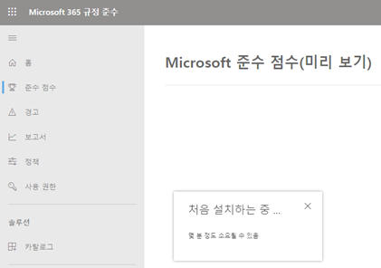
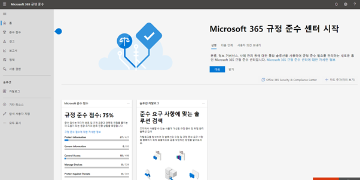
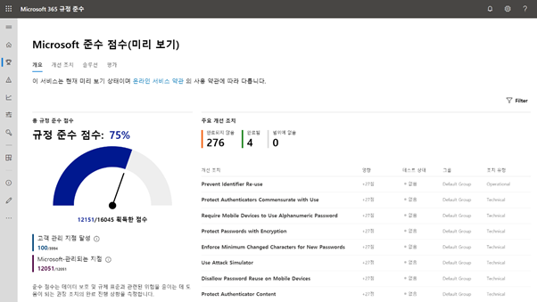
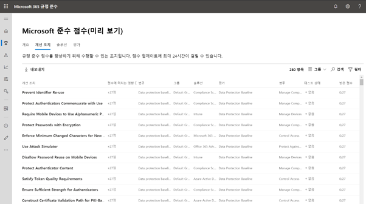
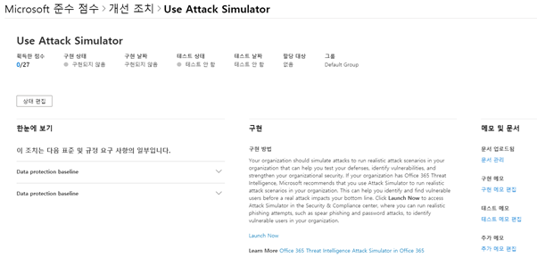
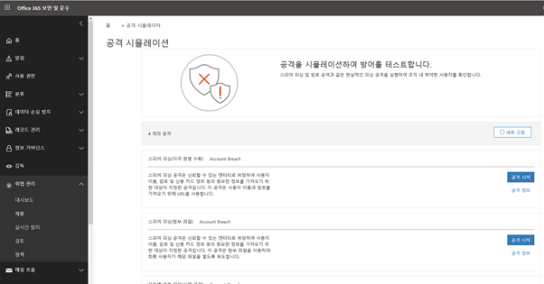
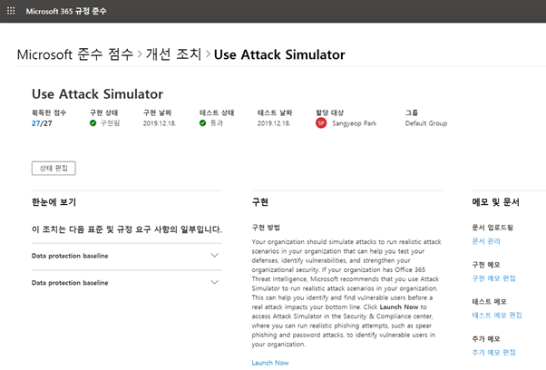

Microsoft Compliance Score and Microsoft 365 Compliance Center
Microsoft에서는 보안을 위한 대비책으로 규정 준수라는 이름의 서비스를 활성화하기 시작했습니다. 이 Microsoft 준수 점수 미리보기 기능은, Microsoft 365 SKU를 사용하는 고객에게 활성화 되어 있으며 고객의 보안에 대한 진척도 및 중요도를 점수로 표현하여 보다 안전한 사용 관리를 위해 제공되고 있습니다.
특히 이 규정 준수 점수를 통하여 모든 위험 평가를 추적하는 도구로 사용할 수 있으며, 간소화 된 준수 관리를 통해 지속적인 평가와 권장 작업 그리고 기본 제공 컨트롤 매핑을 제공합니다.
이러한 규정 준수는 미리 구성 된 서식 파일을 평가에 제공하게 됩니다.
최초 Microsoft 365 규정 준수의 준수 점수를 클릭하게 되면 다음과 같이 새로운 기능이 활성화 됩니다.

(설치라는 이름으로 번역되어 있지만, 실제로 실행하는 클라이언트에 무언가 추가되지는 않습니다.)

규정 준수에 대한 첫 화면입니다. 테넌트 관리자는 위화면 에서처럼 사용하고 있는 환경에 대한 보안 점수를 미리보기 기능으로 볼 수 있습니다.
다음 화면은 준수 점수 메뉴를 들어간 화면입니다.

스크린샷에서 볼 수 있듯이, 점수를 획득하기에 앞서 Microsoft에서 관리되는 준수와 고객이 직접 관리하는 준수로 나뉘어 관리가 됩니다.
Microsoft 관리 되는 지점 • Microsoft에서 관리하는 지점은 클라우드 서비스 공급자로 Microsoft에서 관리하는 컨트롤을 기반으로 준수 점수에 기여합니다. 고객 관리 지점 달성 • 고객 관리 지점은 조직에서 관리하는 컨트롤을 기반으로 하는 규정 준수 점수에 기여합니다.
이러한 규정 준수 점수는 다음의 범주로 분류됩니다.
• Protect information
• Govern information
• Control Access
• Project Against Threats
• Discover And Respond
• Manage Devices
• Manage Internal Risk
• Manage Compliance
위 범주 내에서 규정 준수에 대한 임계치를 두어 최종 보안에 대한 지표를 점수로 표현합니다. 개선 조치 사항에서 수행이 가능한 조치 사항을 목록으로 볼 수 있습니다.

개선 조치 사항 중에 예를 들어 Use Attack Simulator에 대한 항목을 예를 들어 살펴보겠습니다.

개선 조치 항목에 대해 어떠한 작업을 수행해야 하는지 구현 방법을 통해 고객에게 기능을 제공하고 있으며, 이 값을 통해 기본적으로 어떠한 작업이 필요하며 이 필요한 작업을 수행함에 따른 기본적인 가이드를 제공합니다.
이제 Launch Now를 클릭하여 해당 작업 수행으로 넘어갑니다.

클릭 후 넘어간 화면에서는 Use Attacker Simulator를 통해 공격에 대한 내부 검사를 할 수 있습니다.
사용자 공격에 대한 시뮬레이션을 마친 후 개선 조치 사항에서 상태를 편집하면, 관리자는 테스트한 결과값을 입력하여 점수 획득 및 변경된 상태를 확인할 수 있게 됩니다.
